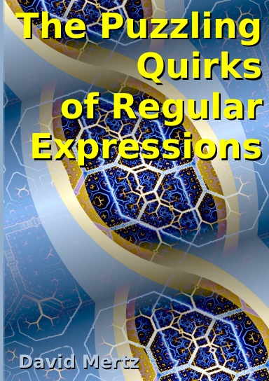
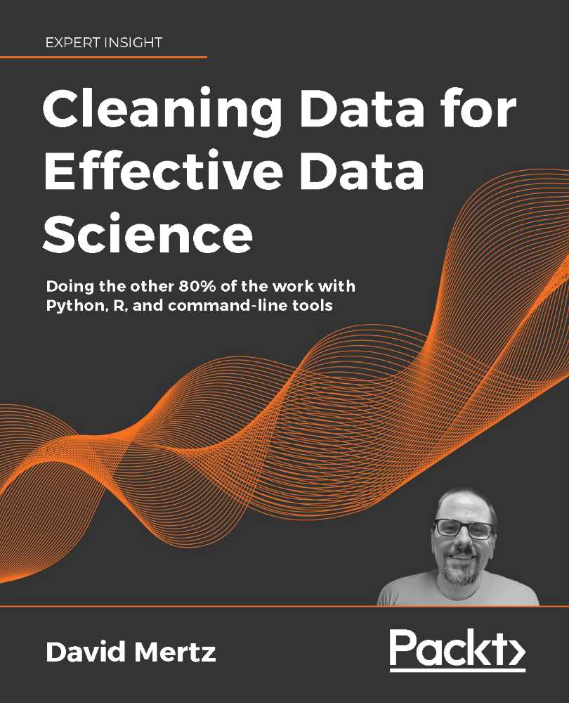
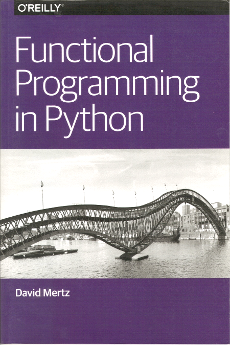
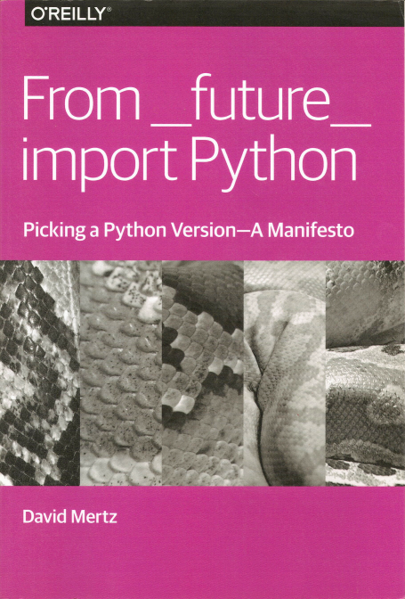

The Puzzling Quirks of Regular Expressions: Paperback | Hardcover  | Online
Paperback: 98 pages
Hardcover: 98 pages
ISBN: 9781312160743
Date: August 2021
Cleaning Data for Effective Data Science: Doing the Other 80% of the Work 
Packt Publishing
Paperback: 498 pages
ISBN: 978-1801071291
Date: March 2021
Functional Programming in Python 
O'Reilly Media
ISBN: 9781491928554
Date: May 2015
From __future__ import Python: Picking a Python Version—A Manifesto 
O'Reilly Media
ISBN: 978-1491926963
Date: April 2015
Text Processing in Python

Addison-Wesley Professional
Paperback: 544 pages
ISBN: 978-0321112545
Date: June 2003
INE Courses
Developed most of INE's Data Science Curriculum during 2020-21. Each course is 4-6 hours of video content and accompanying projects and/or exercises. Specific courses created (written, tested, recorded, etc.) are:
- Regular Expressions with Python
- Date and Time management with Python
- Unit Testing with Python
- Python Concurrency and Parallelism
- Python Standard Library
- Data Serialization with Python
- Web Scraping using Python
- PostgreSQL for Python Developers
- MySQL and MariaDB for Python Developers
- Bash Scripting for Data Scientists
- GitHub and version control
- Software Development with Python
- Bootcamp: Data Analysis, Visualization and Predictive Modeling
- Advanced Python: Iterators, Generators and decorators
- Secure RESTful APIs using Python
- Intro to HTTP using Python
O'Reilly / Safari Online
Created video and live training material for machine learning and data science topics. Videos were recorded in-studio and professionally edited.
- Machine Learning with scikit-learn [January 2019] (7h 17m video)
- Machine Learning with PyTorch [November 2019] (6h 49m video)
Webinars have been approximately at a monthly recurrence since 2018, and each is 4 hours long.
On scikit-learn I teach a freely licensed
repository, which I created,
Machine Learning with sklearn tutorials:
- Beginner Machine Learning with scikit-learn
- Diving Deeper into Machine Learning with scikit-learn
- Advanced Machine Learning with scikit-learn
In a similar manner, I somewhat less often teach from the tutorials I created as Machine Learning with PyTorch tutorials:
- Beginner Machine Learning with PyTorch
- Intermediate Machine Learning with PyTorch
- Advanced Machine Learning with PyTorch
Based on Cleaning Data for Effective Data Science, I teach several webinars. Each title has been taught and refined on several occassions.
Overview of speaking
There is an older page listing abstracts of some talks.
- 2022
- PyCon MEA (Middle East & Africa), Dubai, Dynamic Type Evaluation in Python [repo]
- United Kingdom Department for International Trade, Dynamic Type Evaluation in Python [repo]
- pre-PyCon APAC 2022 Special Talk Event, Encrypting Tulips in the Modern Prestige Society [video] [slides]
- Atlantis Technology Lunch-and-Learn, Encrypting Tulips in the Modern Prestige Society [video] [slides]
- 2021
- Gitex Global x AI Everything 2021, Keynote: The Future History of Generative Adversarial Networks
- 2019
- PiterPy 2019, Interview with PiterPy Organizer
- PiterPy 2019, An Introduction to Generative Adversarial Networks with PyTorch
- 2017
- PyData Seattle 2017, Tutorial: Parallelizing Scientific Python with Dask, with Jim Christ
- 2016
- Encuentro Social de Desarrolladores (Cuba), Functional Programming in Python
- Conferencia Internacional de Software Libre 2016 (Cuba), Reflections on teaching Python to working scientists
- PyCon 2016 (Education Summit), Reflections on teaching Python to working scientists
- PyData SF 2016, Keynote: Working Efficiently with Big Data in Text Formats
- 2015
- PyCon Belarus 2015, Keynote: Python's (future) type annotation system(s)
- 2014
- PyCon-ZA 2014, Keynote: What I learned about Python – and about Guido's time machine – by reading the python-ideas mailing list
- Los Angeles Professional Python Users Group, PyPy-STM
- 2013
- PyCon 2013, Why you should use Python 3 for text processing
- PyCon-UK 2013, Keynote: What I learned about Python – and about Guido's time machine – by reading the python-ideas mailing list
- 2012
- PyCon 2012, Coroutines, event loops, and the history of Python generators
- OSCon 2012, US Patriot Act and implications for Cloud Computing & Data Privacy
- PyCon-India 2012, Keynote: A verifiable election system
- 2010
- Pycon 2010, Maximize your program's laziness
- 2007
- OSCon 2007, Open Source Voting (revisited)
- 2006
- OSCon 2006, Open Source Voting
These 45 articles, that were published by IBM developerWorks, make up the Charming Python series itself; a few more articles are listed below as kindred topics.
Many articles were written in a format called "Smart ASCII" which was converted
to various targets, including the HTML also accompanying most links, marked as
[HTML] here.
- [HTML] (#1) An Introduction to XML Tools for Python
-
[HTML]
(#2) A Closer Look at Python's
xml.domModule - [HTML] (Special Update) Revisiting XML Tools for Python
- [HTML] (#3) My first web-based filtering-proxy
- [HTML] (#4) State Machines: Algorithms and programming approaches in Python
- [HTML] (#5) Text Processing in Python: Tips for Beginners
- [HTML] (#6) Curses programming in Python: Tips for Beginners
- [HTML] (#7) Dynamically reloading modules in long-running processes
- [HTML] (#8) Interviews with Creators of Vyper and Stackless Python
- [HTML] (#9) TK programming in Python: Tips for Beginners
- [HTML] (#10) Interviews with Developers of JPython and Python for .NET
- [HTML] (#11) What's New in Python 2.0?
- [HTML] (#12) Book Roundup
- [HTML] (#13) Functional Programming in Python
- [HTML] (#14) Text Processing in Python with mxTextTools: Advanced Tips
- [HTML] (#15) Developing a Full-Text Indexer in Python
- [HTML] (#16) More Functional Programming in Python
- [HTML] (#17) Review of Python IDEs
-
[HTML]
(#18) Improving the Social Infrastructure of Python:
pydocanddistutils - [HTML] (#19) Even More Functional Programming in Python
- [HTML] (#B1) Iterators and Simple Generators
- [HTML] (#B2) Anygui: The universal graphical Python interface to come
- [HTML] (#B3) Book Roundup, Part 2
-
[HTML]
(#B4) Parsing in Python with
SimpleParse - [HTML] (#B5) Generator-based State Machines and Coroutines
-
[HTML]
(#B6) Parsing in Python with
Spark - [HTML] (#B7) Implementing "weightless threads" with Python generators.
- [HTML] (#B8) Book Roundup, Part 3
- [HTML] (#B9) Psyco - The Python Specializing Compiler
- [HTML] (#B10) The Simpy Simulation Language: Modelling Discrete Simultaneous Events
- [HTML] (#B11) Declarative Mini-languages: Programming as assertion rather than instruction
- [HTML] (#B12) Multiple Dispatch: Generalizing Polymorphism with Multimethods
-
[HTML]
(#B13) The
itertoolsmodule Functional programming in Python becomes lazy -
[HTML]
(#B14) Numerical Python:
Working with the
numericandnumarraypackages - [HTML] (#B15) Review of Python IDEs
- [HTML] (#B16) Testing Frameworks in Python: Making sure your software does what you think it does
- [HTML] (#B17) The Python Enterprise Application Kit: A first look at protocols in Python
- [HTML] (#B18) The Natural Language Toolkit: Using Python in Computational Linguistics
- [HTML] (#B19) DParser for Python: Exploring Another Python Parser
- [HTML] (#B21) Pyrex: Writing C code in Python syntax
- [HTML] (#B22) A New PEAK: Generic functions and predicative dispatch
- [HTML] (#B23) Hatching Eggs: A PEAK at improved installation and package management
- [HTML] (#B24) Decorators make magic easy: A look at the newest Python facility for meta-programming
- [HTML] (#B25) Python Elegance, Python Warts: Sequences and comparisons
- [HTML] (#B26) Python Elegance, Python Warts, Part 2: Properties, attributes, methods and custom access
Charming Python adjacent topics
-
[HTML]
Metaclass Programming in Python, Part 1
Pushing Object Oriented Programming to the Next Level (David Mertz & Michele Simionato) -
[HTML]
Metaclass Programming in Python, Part 2
Understanding the Arcana of Inheritance and Instance Creation (Michele Simionato & David Mertz) -
[HTML]
Metaclass programming in Python, Part 3
Cleverness considered harmful; or, how to do metaprogramming without metaclasse) (David Mertz & Michele Simionato) -
[HTML]
The Twisted Framework, Part One
Understanding Asynchronous Networking -
[HTML]
The Twisted Framework, Part Two
Implementing Web Servers -
[HTML]
The Twisted Framework, Part Three
Stateful Web Servers and Templating -
[HTML]
The Twisted Framework, Part Four
Secure Clients and Servers
These 41 articles, that were published by IBM developerWorks, make up the XML Matters series. The title Ex Nihilo XML Fit, for better or worse was rejected by the publisher.
Many articles were written in a format called "Smart ASCII" which was converted
to various targets, including the HTML also accompanying most links, marked as
[HTML] here.
-
[HTML]
(#1) On the Pythonic Treatment of XML Documents As Objects
(I.
xml_pickle) -
[HTML]
(#2) On the Pythonic Treatment of XML Documents As Objects
(II.
xml_objectify) - [HTML] (#3) Getting Started with the DocBook XML Dialect
- [HTML] (#4) Getting Comfortable with the DocBook XML Dialect
- [HTML] (#5) Transforming DocBook Documents Using XSLT
- [HTML] (#6) Roundup of XML Editors
- [HTML] (#7) Comparing W3C XML Schemas and Document Type Definitions (DTD's)
- [HTML] (#8) XML and Data Models: Hierarchical, Relational and Object-Oriented
- [HTML] (#9) Generating DTDs and XML Documents from SQL Queries
- [HTML] (#10) An Indexer for XML Documents
-
[HTML]
(#11) Lessons in Open Source and Common Sense:
Revisiting
xml_pickleandxml_objectify - [HTML] (#12) Generating SQL Statements from DTDs and XML Documents
- [HTML] (#13) XML and Compression: Exploring the entropy of documents
- [HTML] (#14) The HaXml functional programming model for XML
- [HTML] (#15) The 4Suite XML Tools
- [HTML] (#16) XML-RPC as Object Model: A Data Bundle for the Hoi Polloi?
- [HTML] (#17) PYX: A Line-Oriented XML
- [HTML] (#18) REXML: XML Processing in the Ruby Programming Language
- [HTML] (#19) More on XML and Compression: Block-Level Algorithms and Resource Loads
-
[HTML]
(#20) Squeezing OOP data into XML rules:
The
gnosis.xml.validityLibrary - [HTML] (#21) Roundup of XML Editors: Java and MacOS
- [HTML] (#22) Roundup of XML Editors: Windows
- [HTML] (#23) Yet another better XML: YAML Ain't Markup Language
- [HTML] (#24) reStructuredText: A Light, Powerful Document Markup
- [HTML] (#25) Relax NG: Doing Better than W3C XML Schemas
- [HTML] (#26) More On Relax NG: Tools and Special Issues
- [HTML] (#27) RELAX NG Forms: Compact Syntax and XML Syntax
- [HTML] (#28) The ElementTree API: Another Native Python Approach to XML
- [HTML] (#29) The RXP Parser: An extremely fast validating parser with a Python binding
- [HTML] (#30) The Text Encoding Initiative: An XML Dialect for Archival and Complex Documents
- [HTML] (#31) SXML And SSAX: Manipulating XML in the Scheme Programming Language
- [HTML] (#32) The XOM Java XML API A rigorously correct tree-oriented XML model
- [HTML] (#33) XML For Word Processors: Open source embraces XML as native document format
- [HTML] (#34) GUIs and XML Configuration Data: A look at the use of XML in MacOSX and KDE
- [HTML] (#35) GUIs and XML Configuration Data: The Mozilla Project and XUL
- [HTML] (#36) EVM2003 and XML: Practical XML data design and manipulation for voting systems
- [HTML] (#37) The Dublin Core Metadata Initiative: Describing XML Content with DCMI
- [HTML] (#38) OASIS Election Markup Language: Standardization of XML Formats for Voting and Elections
- [HTML] (#39) Getting the most out of gnosis.xml.objectify: Using utility functions for enhanced object behavior
- [HTML] (#40) Scalable Vector Graphics: Flexible and portable XML language for graphics
- [HTML] (#B1) MochiKit: Lift up your DOM manipulation of XML
I wrote some articles for Intel Developer Services when they had a nice site general for Open Source technologies. The first white papers presented research results that hold up to this day.
- Compression and Streaming of XML Documents: White Paper on the Entropy of Documents
-
Optimizing
xml2structProcessing for Embedded Applications: White Paper on XML Compression (part II)
I wrote a series of six articles on XML Programming Paradigms. I think it pretty much sketches the whole field of XML processing.
- XML Programming Paradigms (part one): Object Oriented Programming with the Document Object Model
- XML Programming Paradigms (part two): Event Driven Programming with the Simple API for XML
- XML Programming Paradigms (part three): Declarative Programming with XML Stylesheet Language Transformations
- XML Programming Paradigms (part four): Functional Programming
- XML Programming Paradigms (part five): Miscellaneous special approaches to XML processing
I wrote a column called Distributing Computing.
- Distributing Computing #1: Introduction to remote program logic under Python
- Distributing Computing #2: Introduction to Python Remote Objects (Pyro)
- Distributing Computing #3: Cross-language remote invocation with XML-RPC
- Distributing Computing #4: Cooperative Computing with Mobile Agents (w/ Boudewijn Rempt)
As my colleagues, fans, and friends might know, I wrote my doctorate in Post-Structuralist Political Philosophy (or something like that; I went in a lot of directions).Many of the articles I wrote between 1990 and 1999 were incorporated (usually in modified/improved form) into my dissertation. Much is also listed as separate articles. You can check my CV to figure out what was published where (or don't bother, most texts are below).
The Speculum and The Scalpel: The Politics of Impotent Representation and Non-Representational Terrorism
- The Prospectus
- The Dissertation in "book format"
- The Dissertation in "page format"
- Just the section epigraphs
- Day-Care Devil Worshipers (1998)
Various other articles and reviews
Many articles were written in a format called "Smart ASCII"
which was converted to various targets, including the HTML also
accompanying most links, marked as [HTML] here.
- Whither Romantic Love? (published in Sex, Love and Friendship. Studies of the Society for the Philosophy of Sex and Love, Volume 2) Editor: Adrianne McEvoy
- Review of the film Hannah Arendt (2012; Directed by Margarethe von Trotta)
- The Racial Other in Nationalist Subjectivations: A Lacanian Analysis (1995)
- Cyborg Bodies Revisited
- Notes on Three Economies: Hyper-real, Real and Hidden
- Are There Any Lesbians in the Film Henry and June?
-
Language(an honors thesis in Philosophy of Language) - [HTML] The Practice of Mathematics (1987)
- Physics and phenomenology
- Islamophobia and the secularism of fools
- The Essence of Sex and Rights
- Cyborgs (entry in International Encyclopedia of Communications; ISBN:9781405131995)
- [HTML] Response to E.O.Wilson's, "The Biological Basis of Morality"
- [HTML] Genotype, Phenotype, and "Norms Of Reaction"
- [HTML] Biological Determinism and Sexual Orientation
- [HTML] Bodily Disciplines
- [HTML] Review of Cornel West's Keeping Faith: Philosophy and Race in America
- [HTML] Between an Epistemology of Gender and a Gendered Epistemology
- [HTML] Review of Doug Henwood's Wall Street
- [HTML] The Net's New Enclosures (a review of Code and Other Laws of Cyberspace by Lawrence Lessig)
- [HTML] Review of Steve Martinot's The Rule of Racialization
- [HTML] The Appeal of Pseudo-Science
- [HTML] Reasonable Men and Reasonable Women
- [HTML] Comparative review of Slavoj Zizek's Tarrying with the Negative and Judith Butler's Bodies that Matter
Articles Relating to AIDS and Ethics
- The Sex Wars
- The Bioethics Tabloids (Udo Schüklenk and David Mertz)
- Women and AIDS (David Mertz, Mary Ann Sushinsky and Udo Schüklenk)
- Deathly Doctrine (Udo Schüklenk and David Mertz)
- Neville Hodgkinson's Conspiracy of Silence (quoted therein, London Sunday Times)
Juvenilia
Assorted wrting, from early childhood through grad school (mostly scanned)